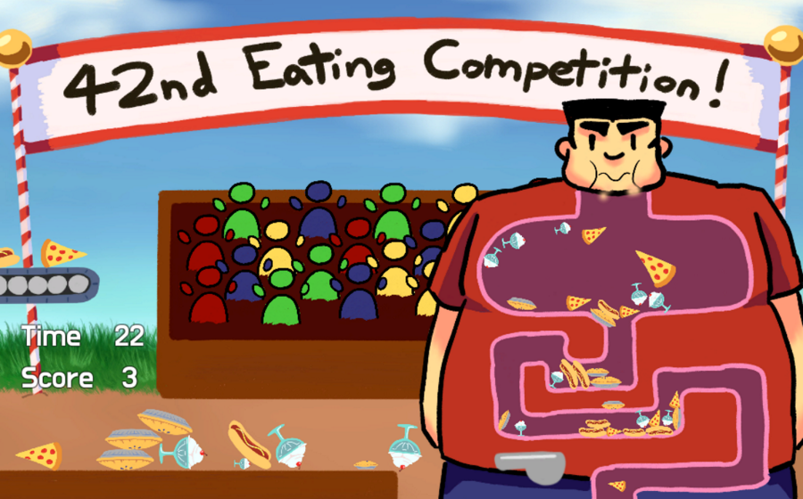

Gut Feeding

August 2018
Programming Language: C#
A Unity game made in 72 hours for the Ludum Dare 42 game jam by a team of two. The theme of the game jam was "Running Out of Space".
Gut Feeding is about a feeding competition where the player tries to eat and digest as much food as possible within the time limit.
The mouse is used to drag incoming food to the mouth, and hovering over food within the body shrinks the food to digest it.
Play it Here
Play it Here